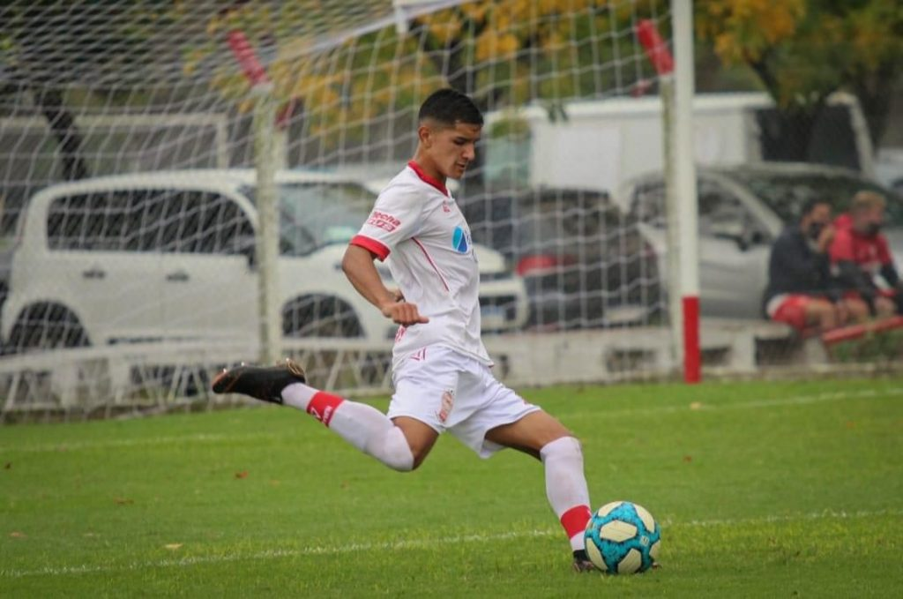
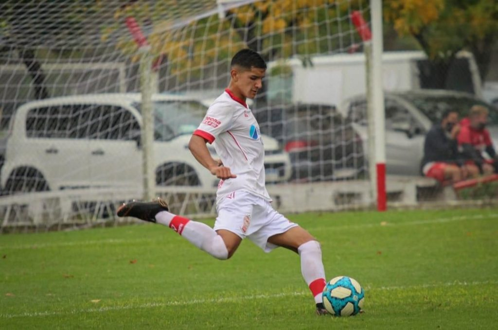
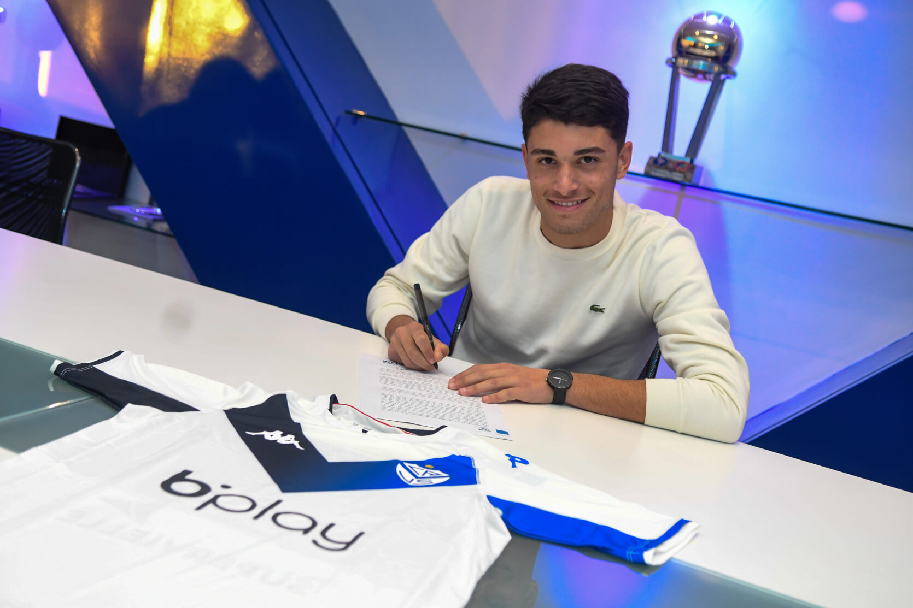
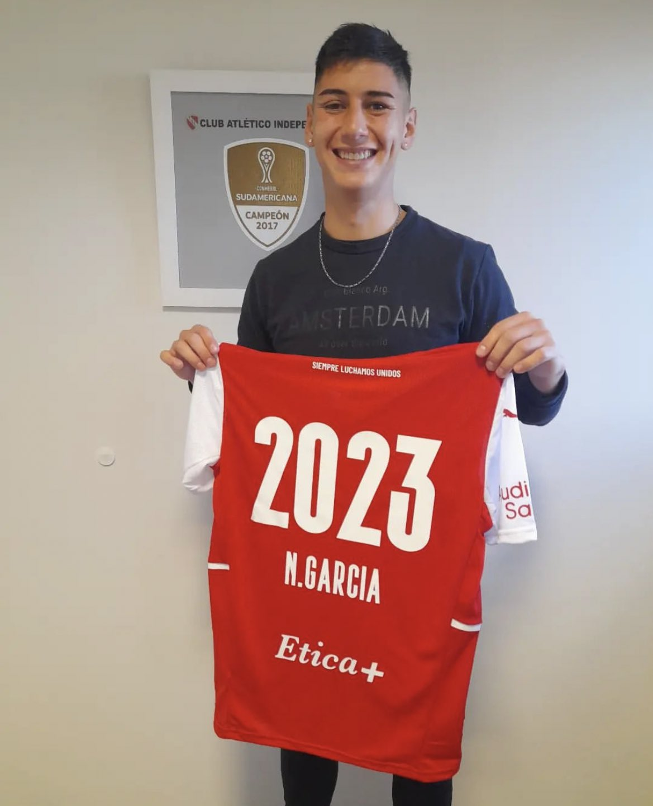
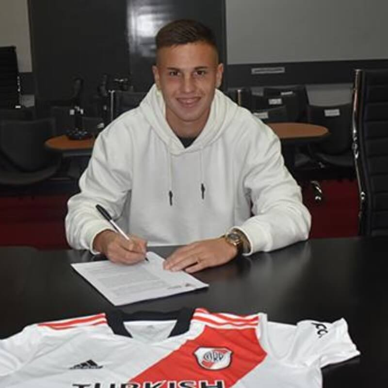

Iván Valenzuela puso la firma
El lateral derecho de 21 años firmó su primer contrato con Huracan hasta diciembre de 2025.
El lateral derecho de 21 años firmó su primer contrato con Huracan hasta diciembre de 2025.
Tobias, juvenil de 19 años, debutó profesionalmente en la derrota de Aldosivi frente a Racing por la quinta fecha del Torneo Binance.

El defensor central categoria 2004 selló su vínculo profesional con Boca Juniors hasta fines del 2026. Fue convocado por Ibarra para enfrentar a Talleres.

El juvenil de 17 años firmó su primer contrato con Vélez Sarsfield hasta diciembre del 2024. Fue capitán durante su paso por las inferiores del Fortín.
El lateral izquierdo de 21 años, firmó con Independiente hasta fines del 2023. Tiene una clausula de 5M US$ y se fue cedido por un año al Xelajú de Guatemala.
El delantero de 19 años, selló su primer vínculo profesional con Defensa y Justicia hasta fines del 2024. El goleador de la reserva se va a préstamo a Cerro Largo de Uruguay.

Federico, mediocampista de 19 años, debutó en Primera División a los 93 minutos en la victoria de Argentinos Juniors frente a Tigre por 2-1 en el Estadio Diego Armando Maradona.

Manuel, lateral derecho de la Reserva de River Plate, selló su primer vínculo profesional hasta diciembre del 2024.
